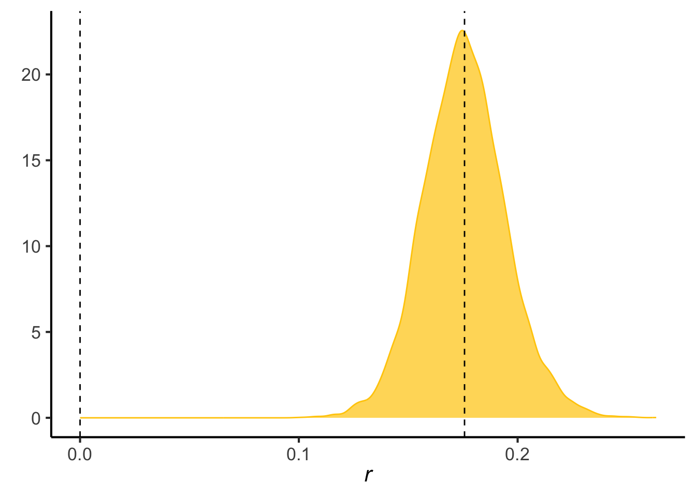
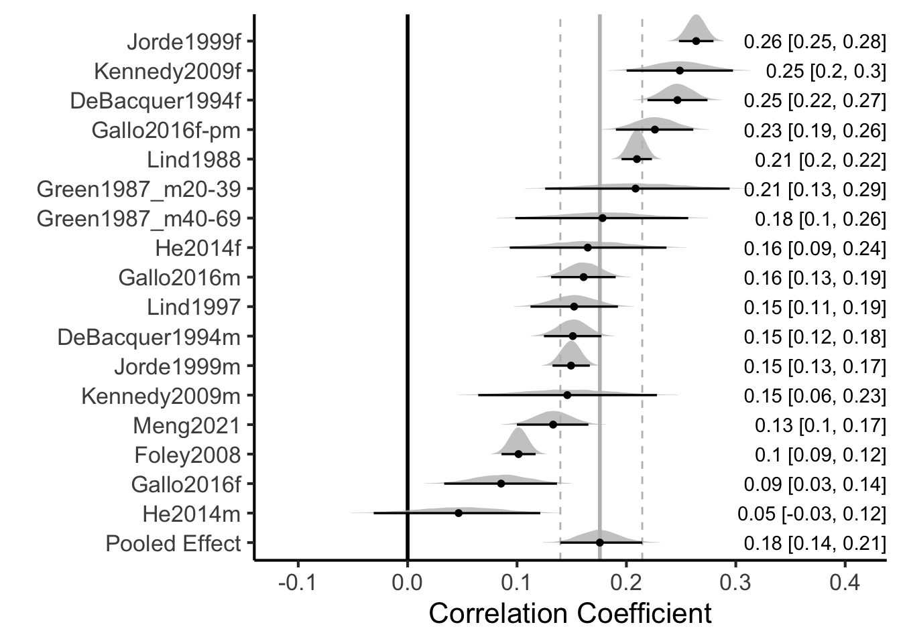

data.sheet <- 'https://docs.google.com/spreadsheets/d/e/2PACX-1vTyvQnc6bLRLGT6QXEMHxiAQVbK_zag_JIAjvYjTMXINcqdkBwglmg_mlj_k9ml9QsrNQl-tZgy8ACl/pub?gid=1100702568&single=true&output=csv'
library(readr)
data <- read_csv(data.sheet)#from a google sheetMeta Analysis of Correlations between Calcium and Cholesterol
Data Souces
Located studies from PubMed searches and checking internal references. Manually re-calculated cholesterol to mM when presented in mg/dL
The data can be found in a google sheet. This script can be found in /Users/davebrid/Documents/GitHub/PrecisionNutrition/Meta Analysis and was most recently run on Sun Jan 19 10:44:51 2025
Meta Analysis - Standard Approach
Analysed data from mean +/- SD of cases and controls
library(meta)
library(tidyr)
analysis <- metacor(data=data %>% dplyr::filter(!is.na(`r`)),
cor = r,
n = n,
studlab = Study,
fixed = FALSE,
random = TRUE,
method.tau = "REML",
hakn = TRUE,
title="Calcium and Cholesterol")
forest(analysis,
fontsize=6,,
test.overall.random=TRUE)
Bayesian Hierarchical Model
Followed the procedure outlined in Harrer et al. (2021a) and Harrer et al. (2021b) at here. This uses a framework described by Higgins, Thompson, and Spiegelhalter (2008). Under this approach there is a “true” effect (\(\mu\)) with a cross-study variance of \(\tau\). Within this each study (\(\theta _k\)) should be normally distributed defined:
\[\theta _k \sim N(\mu,\tau^2)\] Each study in turn is a proximate measure of the effect size in that population \(\hat{\theta_k}\), with sampling error \(\sigma^2\) drawn from another normal distribution
\[\hat\theta _k \sim N(\theta _k,\sigma^2_k)\]
This can be simplified to
\[\hat\theta _k \sim N(\mu,\sigma^2_k + \tau^2)\]
Defining a Prior Distribution
\[ p \sim (\mu,tau^2) \] We took an approach using weakly informative priors (recommended in Williams, Rast, and Bürkner (2018)) of \(\mu = N(0,0.2)\) and \(\tau=HC(0,0.5)\). This means we predict the correlations to be around zero but with a standard deviation of \(\pm 0.2\). For the betwen study variance (\(\tau\)) we used the heavy-tailed only positive Half-Cauchy distribution.
We calculated the standard error of the estimate of r using
\[SE = \sqrt{\frac{(1 - r^2)}{(n - 2)}}\]
library(dplyr)
data <-
data %>%
mutate(se=sqrt((1-r^2)/(n-2)))This was analysed using {brms} (see @) using no U-turn sampling (NUTS) as described in Hoffman and Gelman (2014).
library(brms)
priors <- c(prior(normal(0,0.2), class = Intercept),
prior(cauchy(0,0.5), class = sd))
meta.brm <- brm(r|se(se) ~ 1 + (1|Study),
data = data,
prior = priors,
iter = 4000)Internpretation of Bayesian Analysis
#summary(meta.brm)
#ranef(meta.brm)
fixef(meta.brm) %>% kable(caption="Bayesian estimates of correlation between cholesterol and calcium")| Estimate | Est.Error | Q2.5 | Q97.5 | |
|---|---|---|---|---|
| Intercept | 0.167 | 0.019 | 0.128 | 0.205 |
Posterior Probability Check
pp_check(meta.brm)
Posterior Probabilities
post.samples <- as_draws_df(meta.brm, c("Intercept", "sd_Study__Intercept"))
names(post.samples) <- c("smd", "tau")
library(ggplot2)
ggplot(aes(x = smd), data = post.samples) +
geom_density(fill = "lightblue", # set the color
color = "lightblue", alpha = 0.7) +
geom_vline(xintercept = mean(post.samples$smd),lty=2) +
geom_vline(xintercept = 0,lty=2) +
labs(x = expression(italic(r)),
y = element_blank()) +
theme_classic(base_size=16)
ggplot(aes(x = tau), data = post.samples) +
geom_density(fill = "lightgreen", # set the color
color = "lightgreen", alpha = 0.7) +
geom_vline(xintercept= mean(post.samples$tau),lty=2) + # add point at mean
labs(x = expression(tau),
y = element_blank()) +
theme_classic(base_size=16)
Forest Plot for Bayesian Meta-Analysis
library(tidybayes)
library(ggridges)
library(glue)
library(stringr)
library(forcats)
# posterior probabilitieis for each study
study.draws <- spread_draws(meta.brm, r_Study[Study,], b_Intercept) %>%
mutate(b_Intercept = r_Study + b_Intercept)
# pooled effect size draws
pooled.effect.draws <- spread_draws(meta.brm, b_Intercept) %>%
mutate(Study = "Pooled Effect")
# combined draws
forest.data <- bind_rows(study.draws,
pooled.effect.draws) %>%
ungroup() %>%
mutate(Study = str_replace_all(Study, "[.]", " ")) %>%
mutate(Study = reorder(Study, b_Intercept)) #arrange by effect size
# calculate effect size of each study
forest.data.summary <- group_by(forest.data, Study) %>%
mean_qi(b_Intercept)
# generate plot
ggplot(aes(b_Intercept,
relevel(Study, "Pooled Effect",
after = Inf)),
data = forest.data) +
# Add vertical lines for pooled effect and CI
geom_vline(xintercept = fixef(meta.brm)[1, 1],
color = "grey", size = 1) +
geom_vline(xintercept = fixef(meta.brm)[1, 3:4],
color = "grey", linetype = 2) +
geom_vline(xintercept = 0, color = "black",
size = 1) +
# Add densities
geom_density_ridges(fill = "grey",
rel_min_height = 0.01,
col = NA, scale = 1,
alpha = 0.8) +
geom_pointinterval(data = forest.data.summary,
size = 1,
orientation='horizontal',
aes(xmin = .lower, xmax = .upper)) +
# Add text and labels
geom_text(data = mutate_if(forest.data.summary,
is.numeric, round, 2),
aes(label = glue("{b_Intercept} [{.lower}, {.upper}]"),
x = Inf), hjust = "inward") +
labs(x = "Correlation Coefficient", # summary measure
y = element_blank()) +
theme_classic(base_size=16)
Summary
There is solid evidence of cross-sectional associations between cholesterol and calcium levels in multiple studies. The aggregate effect size is 0.17 +/- 0.018 (p=4.15^{-8}).
References
Harrer, Mathias, Pim Cuijpers, Furukawa Toshi A, and David D Ebert. 2021a. “Chapter 13 Bayesian Meta-Analysis.” https://bookdown.org/MathiasHarrer/Doing_Meta_Analysis_in_R/bayesian-ma.html.
———. 2021b. Doing Meta-Analysis with R: A Hands-on Guide. 1st ed. Boca Raton, FL; London: Chapman & Hall/CRC Press.
Higgins, Julian P. T., Simon G. Thompson, and David J. Spiegelhalter. 2008. “A Re-Evaluation of Random-Effects Meta-Analysis.” Journal of the Royal Statistical Society Series A: Statistics in Society 172 (1): 137–59. https://doi.org/10.1111/j.1467-985X.2008.00552.x.
Hoffman, Matthew D., and Andrew Gelman. 2014. “The No-u-Turn Sampler: Adaptively Setting Path Lengths in Hamiltonian Monte Carlo.” Journal of Machine Learning Research 15 (47): 1593–623. http://jmlr.org/papers/v15/hoffman14a.html.
Williams, Donald R., Philippe Rast, and Paul-Christian Bürkner. 2018. “Bayesian Meta-Analysis with Weakly Informative Prior Distributions.” OSF. https://doi.org/10.31234/osf.io/7tbrm.
Session Information
sessionInfo()R version 4.4.2 (2024-10-31)
Platform: x86_64-apple-darwin20
Running under: macOS Monterey 12.7.6
Matrix products: default
BLAS: /Library/Frameworks/R.framework/Versions/4.4-x86_64/Resources/lib/libRblas.0.dylib
LAPACK: /Library/Frameworks/R.framework/Versions/4.4-x86_64/Resources/lib/libRlapack.dylib; LAPACK version 3.12.0
locale:
[1] en_US.UTF-8/en_US.UTF-8/en_US.UTF-8/C/en_US.UTF-8/en_US.UTF-8
time zone: America/Detroit
tzcode source: internal
attached base packages:
[1] stats graphics grDevices utils datasets methods base
other attached packages:
[1] forcats_1.0.0 stringr_1.5.1 glue_1.8.0 ggridges_0.5.6
[5] tidybayes_3.0.7 ggplot2_3.5.1 brms_2.22.0 Rcpp_1.0.14
[9] dplyr_1.1.4 tidyr_1.3.1 meta_8.0-1 metadat_1.2-0
[13] readr_2.1.5 knitr_1.49
loaded via a namespace (and not attached):
[1] svUnit_1.0.6 tidyselect_1.2.1 farver_2.1.2
[4] loo_2.8.0 fastmap_1.2.0 CompQuadForm_1.4.3
[7] tensorA_0.36.2.1 mathjaxr_1.6-0 digest_0.6.37
[10] lifecycle_1.0.4 StanHeaders_2.32.10 processx_3.8.5
[13] magrittr_2.0.3 posterior_1.6.0 compiler_4.4.2
[16] rlang_1.1.4 tools_4.4.2 yaml_2.3.10
[19] labeling_0.4.3 bridgesampling_1.1-2 htmlwidgets_1.6.4
[22] bit_4.5.0.1 pkgbuild_1.4.5 curl_6.1.0
[25] plyr_1.8.9 xml2_1.3.6 abind_1.4-8
[28] withr_3.0.2 purrr_1.0.2 numDeriv_2016.8-1.1
[31] grid_4.4.2 stats4_4.4.2 colorspace_2.1-1
[34] inline_0.3.21 scales_1.3.0 MASS_7.3-64
[37] cli_3.6.3 mvtnorm_1.3-3 rmarkdown_2.29
[40] metafor_4.6-0 crayon_1.5.3 reformulas_0.4.0
[43] generics_0.1.3 RcppParallel_5.1.9 rstudioapi_0.17.1
[46] reshape2_1.4.4 tzdb_0.4.0 minqa_1.2.8
[49] rstan_2.32.6 splines_4.4.2 bayesplot_1.11.1
[52] parallel_4.4.2 matrixStats_1.5.0 vctrs_0.6.5
[55] boot_1.3-31 Matrix_1.7-1 jsonlite_1.8.9
[58] callr_3.7.6 arrayhelpers_1.1-0 hms_1.1.3
[61] bit64_4.5.2 ggdist_3.3.2 nloptr_2.1.1
[64] codetools_0.2-20 ps_1.8.1 distributional_0.5.0
[67] stringi_1.8.4 gtable_0.3.6 QuickJSR_1.5.1
[70] lme4_1.1-36 munsell_0.5.1 tibble_3.2.1
[73] pillar_1.10.1 htmltools_0.5.8.1 Brobdingnag_1.2-9
[76] R6_2.5.1 Rdpack_2.6.2 vroom_1.6.5
[79] evaluate_1.0.3 lattice_0.22-6 rbibutils_2.3
[82] backports_1.5.0 rstantools_2.4.0 coda_0.19-4.1
[85] gridExtra_2.3 nlme_3.1-166 checkmate_2.3.2
[88] xfun_0.50 pkgconfig_2.0.3